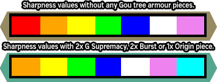
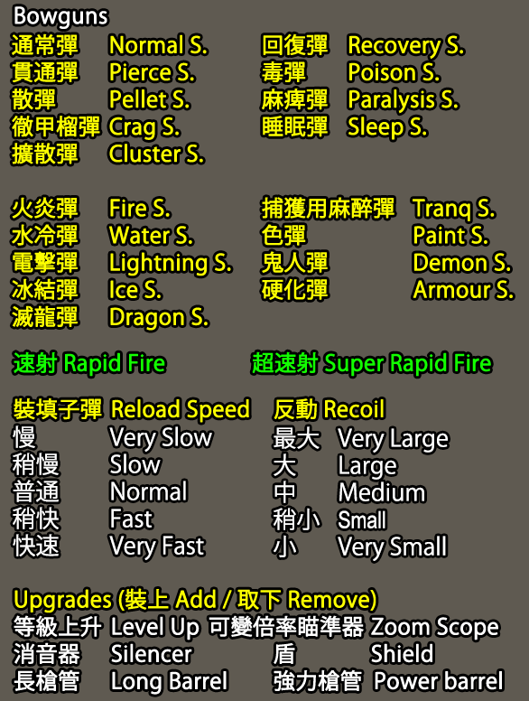

Both Tonfa and Switch Axe F are exclusively available at G Rank!
Use the Detailed Weapon Information, Tonfa Information and Switch Axe F Information links in the sidebar to view in depth overviews of all weapons!
| Weapon Names (EN/CN/JP) | Multi | ||
| Sword and Shield | 單手劍 | 片手剣 | 1.4 |
| Dual Swords | 雙劍 | 双剣 | 1.4 |
| Great Sword | 大劍 | 大剣 | 4.8 |
| Long Sword | 太刀 | 太刀 | 4.8 |
| Hammer | 大錘 | ハンマー | 5.2 |
| Hunting Horn | 狩獵笛 | 狩猟笛 | 5.2 |
| Lance | 長槍 | ランス | 2.3 |
| Gunlance | 銃槍 | ガンランス | 2.3 |
| Tonfa | 穿龍棍 | 穿龍棍 | 1.8 |
| Switch Axe F | 斬擊斧Ｆ | スラッシュアックスF | 5.4 |
| Magnet Spike | 磁斬鎚 | マグネットスパイク | 1.2 |
| Heavy Bowgun | 重銃 | ヘビィボウガン | 1.2 |
| Light Bowgun | 輕弩 | ライトボウガン | 1.2 |
| Bow | 弓 | 弓 | 1.2 |
Both Tonfa and Switch Axe F require that you hit G Rank to be unlocked. Switch Axe is unlocked as soon as you are GR but using Tonfas requires you to do a string of specific quests. Check their unique section for details.
Upon getting a Partner you will be prompted to choose if you want to make Equipment for them or yourself before hitting crafting menus. Which option you choose is immediately obvious because the partner will take your place if you are making things for them.
| Elements, Status and Properties | |
| Standard Weapons 武器 | Normal weapons with no special properties or effects. The baseline for all other weapon types. |
| SP武器 SP Weapon | HR5 weapons that are reskins of other weapons. These are automatically buffed with +10 True Raw and +20% Affinity when taken on HR5 or higher quests. Mostly lacking purpose in the game since their original launch. |
| HC武器 HC Weapon | HR5 weapons that specifically have low rarity but decent power relative to said rarity. Like SP weapons, these are currently lacking in purpose in the game. |
| 親方印武器 Master's Mark Weapon | Master's Mark Weapons are mostly identical to normal weapons but naturally grant the skill Weapon Handling without taking up a skill slot or using any points. Unless they are one of a handful that upgrade to G Finesse, these mostly lack a purpose in the game. |
| 進化武器 Evolution Weapon | Evolution Weapons are weapons that require you to hunt Raviente in order to be upgraded. They have 300 levels across 3 tiers (HR2, HR5, GR) and end up some of the best weapons in the game and outright the best True Raw based weapons. These weapons require hundreds of hours of grind and should mostly be ignored unless you are incredibly serious about getting them and already at endgame level skills wise. Melee Weapons can utilise Raviente Power Crystals (強擊劍晶) which boost Raw damage by 1.2x. 30 can be carried. Light Bowguns can utilise Acid Shots (X酸彈) of either raw or the five elemental types which add +10 to the weakness value of that type for 30 seconds. Only 5 can be carried.. Heavy Bowguns: can utilise Bomb Shots which are lingering shots that damage over time within a certain radius. 5 can be carried. Bows can utilise Impact Coatings. These change your shots to use Impact Hitbox Values and inflict KO but still deal Shot type damage and thus cannot break things like Daimyo shells limited to Impact. 30 Coatings can be carried. |
| 剛種武器 Gou Weapon | Gou Weapons are the core HR5 weapon type. Melee weapons gain ESP when you are at maximum HP and Stamina Light Bowguns can have Ultra Rapid Fire, which allows you to keep feeding ammo into a single rapid fire volley. Heavy Bowguns have a Heat Cannon that lets you use heat built up from consistent shooting to fire off a giant beam of heat like a gravios. Bows can use Bomb Coatings which deal bomb damage. |
| 天嵐武器 Heavenly Storm Weapon | Attack is strengthened based on the number of gou (or higher) level armour pieces equipped. While on HR5 or higher quests having 2+ pieces of armour at least Heavenly Storm (天嵐) level will cause Blademaster sharpness to increase a level (purple to cyan etc.) and cause Gunners to gain increased critical range multipliers and enhanced power coatings. |
| 覇種武器 Supremacy Weapon | Identical to Heavenly Storm but with an altered visual glow effect and higher base stats. |
| G級覇種 G Supremacy Weapon | Identical to Supremacy but with an altered visual glow effect and higher base stats. |
| 烈種武器 Burst Weapon | Mostly identical to G Supremacy but with an altered visual glow effect and much higher base stats. Burst weapons also grant a skill for simply being equipped which is labelled on their descriptions. This is commonly something like Vamprism, Exploit Weakness or Evade Distance. |
| 始種武器 Origin Weapon | Mostly identical to Burst but with an altered visual glow effect and much higher base stats. As with burst weapons these also grant a skill for simply being equipped which is labelled on their descriptions. This is commonly something like Vamprism, Exploit Weakness or Evade Distance. |
| G級武器 G Rank Weapon | G Rank Weapons have Sigils instead of Decorations and have a levelling system that goes up to Lv50. Commonly a Lv50 weapon will be simply referred to as G50 or similar. |
| G級技巧 G Rank Finesse | Upgraded forms of various event, festival and normal weapons. These weapons have the effects of Weapon Handling's faster sheathing and unsheathing and Movement Speed +1 G8 introduces the upgrading of normal G Rank Lv50 weapons into Finesse variants that end up with better stats. |
| 天廊武器 Tower Weapon | A customisable weapon made from materails found by playing through the Sky Corridor, individually customisable for Sharpness, Raw, Elemental, Status, Shelling Type, Shot Type, etc. and thus unique per player. Can easily rival Lv50 G Rank weapons when completely upgraded, depending on a number of factors. The decorations that can be inserted into these outright give skills without using slots which is especially powerful when built correctly. |
| 遷悠武器 Exotic Weapon | Exotic weapons are simply the weapons of the various Mainline import or Exotic monsters. These all start at either HR5 or GR (Swaxe and Tonfa) and have either 2 or 1 upgrades after being crafted. These weapons all have the stats of G50 weapons when maxed and can take both Decorations and Sigils as well as granting Quick Eating without it taking up any slots or needing skill points. These weapons need you to have access to G Rank exotics in order to be completed and all require their relevant monster's lowest % carve such as a Jasper or Mantle to be finished. |
| 祈歌武器 Prayer Weapon | Prayer weapons are directly tied to the Diva Defense event and are gained from either daily or personal rewards. By default these have stats equivalent to a low end G50 weapon but when you have a Prayer active during the Song of War Chapter of the Diva Event they are buffed massively to the extent that they can eclipse even Lv100 G Raviente weapons. Specifically they are buffed with: • True Raw +45 • Doubled Elemental • Weapons Handling and Movement Speed +2 • Enables weapon type's Active Feature • Sharpness colours upgraded one tier • Activates the special Dual Hiden skill • Interception Points increased to 1.2x |
| 辿異武器 Zenith Weapon | Zenith weapons are G Rank weapons that become available from GR200 and are completed only after hitting GR800. These weapons have stats beyond those of standard G50 weapons and come with a unique ability and one zenith skill. The first ability is that they have enhanced Zenith Part Breaking abilities. This makes it so you can more easily destroy the specific parts on Zenith Monsters that reward you unique items required for all Zenith equipment. Zenith Skills are special skills that either upgrade an existing skill or add more skill slots. For example Thunder Clad Up incrases the active duration of Thunder Clad when it is on a Zenith Weapon or Armour piece. |
When using any weapons that originate from a Gou path that are at least Heavenly Storm (天嵐防具) or higher levels you can boost a number of stats based on the number of pieces of related armour you have.
When using a Gou tree weapon every piece of Heavenly Storm (天嵐防具), Supremacy (霸種防具), G Supremacy (G級霸種防具) or Burst (烈種防具) Armour adds +15 Attack, +2% Status and +2% Elemental, this stacks per piece allowing for a maximum of +80 Attack, +10% Status and +10% elemental.
If you have at least two pieces of the above armour types equipped you will also gain the effects of Sharpness Level Up, Critical Distance Up +0.3x and Power Coatings Up +0.1x. The first simply increases the colour grade of sharpness by one full level, the Critical Distance multiplier simply greatly enhances properly spaced shots for ranged weapons and the Power Coatings Up enhances the effects of power coatings further (i.e. 1.6x > 1.7x). These effects are only active on Gou, Supremacy or G Rank quests. This is not exactly limiting as this is the bulk of content you will actually be playing.

When using a Gou tree weapon every piece of Origin (始種防具) Armour adds +20 Attack, +3% Status and +3% Elemental, this stacks per piece allowing for a maximum of +110 Attack, +15% Status and +15% elemental.
If you have any piece of Origin (始種防具) Armour equipped you will gain the effects of Sharpness Level Up when having the proper Gou weapon types. Origin pieces are incredibly notable for gunners in that the Critical Distance Up and Power Coatings Up buffs apply to all G Rank Weapons, not just ones from Gou trees. This is a huge buff for standard weapons to the extent that it's almost never worth taking a standard armour piece over an Origin one, even with the advent of Zenith armours in the Z update. The only thing to note is that the extra Attack, Elemental and Status does not get applied to non-Gou types.
| Elements, Status and Properties | |
| 火屬性 | Fire |
| 雷屬性 | Thunder |
| 龍屬性 | Dragon |
| 水屬性 | Water |
| 冰屬性 | Ice |
| 催眠屬性(累積值) | Sleep |
| 毒屬性(累積值） | Poison |
| 麻痺屬性(累積值) | Paralysis |
| 防禦力+ | Defense + |
| Combo Elements | |
| 光屬性 | Light (70% Fire, 70% Thunder) |
| 炎屬性 | Blaze (70% Fire, 70% Dragon) |
| 天翔屬性 | Tenshou (30% Fire, 100% Water, 70% Thunder) |
| 雷棰屬性 | Lightning Rod (70% Thunder, 70% Dragon) |
| 熾凍屬性 | Okiko (80% Fire, 80% Ice, 40% Dragon) |
| 黑焰屬性 | Black Flame (50% Fire, 150% Dragon) |
| 紅魔屬性 | Crimson Demon (50% Dragon, 150% Fire) |
| 闇屬性 | Dark (80% Ice, 80% Dragon) |
| 奏屬性 | Music (100% Water, 100% Ice) |
| 響屬性 | Sound (100% Water, 100% Dragon) |
| 風屬性 | Wind (80% Thunder, 80% Ice) |
| 灼零 | Burning Zero (125% Ice, 125% Fire) |
| 皇鳴 | Emperor's Roar (150% Thunder, 50% Dragon) |
Combination elements always deal the damage of both elements, the visible element upon hitting a monster will be whatever that hitzone is weak to. So for example if you had a weapon with 100 Light and hit a hitbox that was weak to fire, you would deal 80 Thunder and 80 Fire but you would only see the fire damage visuals.
Image Quick References:
Weapon Elements
Also see this section of spreadsheet
Sharpness in MHF has 8 levels currently, ranging from red to cyan. The image below shows each level of sharpness with its Raw Multiplier on the top and the Elemental Multiplier on the bottom. Blue Sharpness or higher also adds an additional 10% Affinity.
| Weapon Length (長度) | |
| 極短 | Very Short |
| 短 | Short |
| 中 | Normal |
| 長 | Long |
| 極長 | Very Long |
| Gunlance Shots | |
| 【通常型】 | Normal Shot |
| 【擴散型】 | Spread Shot |
| 【放射型】 | Long Shot |
| 砲擊LV | Shelling Level |
| Sword Crystals | |
| 爆擊劍晶 | Explosive Sword Crystal |
| 強擊劍晶 | Power Sword Crystal |
| 猛毒劍晶 | Poison Sword Crystal |
| 麻痺劍晶 | Paralysis Sword Crystal |
| 睡眠劍晶 | Sleep Sword Crystal |
| 火焰劍晶 | Fire Sword Crystal |
| 水激劍晶 | Ice Sword Crystal |
| 雷神劍晶 | Thunder Sword Crystal |
| 冰結劍晶 | Ice Sword Crystal |
| 龍王劍晶 | Dragon Sword Crystal |
| GR200 Sword Crystals | |
| 業炎劍晶 | Inferno Sword Crystal |
| 水獄劍晶 | Tsunami Sword Crystal |
| 雷霆劍晶 | Storm Sword Crystal |
| 冰刃劍晶 | Glacial Sword Crystal |
| 龍帝劍晶 | Elder Dragon Sword Crystal |
Weapon length is a mechanic unique to Frontier, the length adjusts the total reach of the weapon and the 'sweet spot' accordingly. For example, on a very short GS the entire hitbox of the weapon practically becomes the sweet spot at the cost of losing a lot of range with the opposite being true on very long ones.
Sword Crystals require you to have their individual skills to be used, there are three tiers of each with +3 giving the maximum damage or status infliction per crystal used. You can apply the crystals by either holding R2 and pressing the Right Analog in (R3) or by pressing Shift plus the Minus key (not on numpad) or by using the Touchpad on the Vita.
GR200 Sword Crystals are purely elemental and do around the same amount of elemental damage as three hits from normal ones. These crystals can only be purchased for GCP from the Pink store after hitting GR 200 at G rank.
| Bowgun Reload Speed (裝填子彈) | |
| 稍慢 | Very Slow |
| 慢 | Slow |
| 普通 | Normal |
| 稍快 | Fast |
| 快速 | Very Fast |
| Bowgun Recoil (反動) | |
| 中 | Medium |
| 小 | Small |
| 稍小 | Smaller |
| Bowgun Ammo | |
| 通常彈 | Normal Shot |
| 貫通彈 | Pierce Shot |
| 散彈 | Pellet Shot |
| 徹甲榴彈 | Crag Shot |
| 擴散彈 | Cluster Shot |
| 回復彈 | Recovery Shot |
| 毒彈 | Poison Shot |
| 麻痺彈 | Paralysis Shot |
| 睡眠彈 | Sleep Shot |
| 火炎彈 | Fire Shot |
| 水冷彈 | Water Shot |
| 電擊彈 | Thunder Shot |
| 冰結彈 | Ice Shot |
| 滅龍彈 | Dragon Shot |
| 捕獲用麻醉彈 | Tranq Shot |
| 色彈 | Paint Shot |
| 鬼人彈 | Demon Shot |
| 硬化彈 | Armour Shot |
| 速射 | Rapid Fire |
| 超速射 | Ultra Rapid Fire |
Check Equipment, Decorations & Skills > Weapons > Detailed Weapon Information section for this.

Critical Distance is indicated by the shot expanding fully and creating a circle indicator.

Heavy Bowgun has a much larger impact animation while in the first half of critical distance on standard shots making it incredibly obvious when you are properly spaced. This adds an extra 0.3x multiplier to damage in that zone (e.g. 2.0 in first half of Normal Shot range, 2.3x with an Origin Piece and G Rank Weapon, etc.)

Bows and Bowgun Hitbox Values (Gdoc)
| Elements, Status and Properties | |
| 火屬性 | Fire |
| 雷屬性 | Thunder |
| 龍屬性 | Dragon |
| 水屬性 | Water |
| 冰屬性 | Ice |
| Combo Elements | |
| 光屬性 | Light (70% Fire, 70% Thunder) |
| 炎屬性 | Blaze (70% Fire, 70% Dragon) |
| 天翔屬性 | Tenshou (30% Fire, 100% Water, 70% Thunder) |
| 雷棰屬性 | Lightning Rod (70% Thunder, 70% Dragon) |
| 熾凍屬性 | Okiko (80% Fire, 80% Ice, 40% Dragon) |
| 黑焰屬性 | Black Flame (50% Fire, 150% Dragon) |
| 紅魔屬性 | Crimson Demon (50% Dragon, 150% Fire) |
| 闇屬性 | Dark (80% Ice, 80% Dragon) |
| 奏屬性 | Music (100% Water, 100% Ice) |
| 響屬性 | Sound (100% Water, 100% Dragon) |
| 風屬性 | Wind (80% Thunder, 80% Ice) |
| Bow Arc Shots | |
| 曲射 | Arc Shot Type |
| 切斷型 | Arrow Rain |
| 放散型 | Wide Pellet Rain |
| 集中型 | Narrow Pellet Rain |
| 爆裂型 | Explosive Shell |
| Bow Charge Types | |
| 貫通 | Pierce |
| 連射 | Rapid |
| 擴散 | Scatter |
| Bow Coatings | |
| 強擊瓶 | Power Bottle |
| 爆擊瓶 | Crit Bottle |
| 毒瓶 | Poison Bottle |
| 麻痺瓶 | Paralysis bottle |
| 睡眠瓶 | Sleep Bottle |
| Bow Coatings | ||
| Coating Name | Coating Modifier | |
| 強擊瓶 (Power Coating) | 1.5 | |
| 催眠瓶 (Sleep Coating) | 1.4 | |
| 麻痺瓶 (Paralysis Coating) | 1.4 | |
| 毒瓶 (Poison Coating) | 1.4 | |
| 打擊瓶 (Impact Coating) | 1.4 | |
| Bow Hiden adds +0.2 to modifiers of coatings above, having any number of Origin Pieces adds +0.1 and Consumption Slayer adds +0.2 (i.e. all three pushes Power Coating to 2.0x) | ||
| 爆擊瓶 (Bomb Coating) | 1.0 | |
Check Equipment, Decorations & Skills > Weapons > Detailed Weapon Information section for this.
Holding down the aim button/key will show a rough indication of Critical Distance and hits within critical distance will do a large flash while those outside of it will do a small flash.
| Rough Sweet Spots | |
| Pierce Shot | 4 to 7.5 backhops 2 to 3.75 rolls |
| Rapid Shot | 2 to 4.5 backhops 1 to 2.25 rolls |
| Scatter Shot | 0.5 to 3 backhops 0.25 to 1.5 rolls |
| Rising Shot | 6~ backhops 3~ rolls |

Bows and Bowgun Hitbox Values (Gdoc)
The Active Feature system is simply a daily buff to a single weapon type. These effects last from noon until noon at which time a new weapon type will be chosen. You can see up to one day in advance by simply looking behind the main Active Feature bar at the top of your screen while in town.
| Active Feature Effects | |
Sword and Shield | Status and Elemental attack increased 1.2x. This is internal only and does not change the value on your weapon status. |
Dual Swords | Stamina and HP consumption lowered (0.5x) |
Great Sword | Unsheathe attacks gain +100% affinity. This is additional and goes on top of any existing affinity and works with Critical Conversion. With Z1 this also applies to attacks from Parries and also gives the raw increasing effect of skill Critical Conversion (no +30%) while you are performing these actions. |
Long Sword | Full spirit bar buff effect increased (+10 atk > +40 atk) |
Hammer | Stun damage increased 1.5x, stacks with Sigil or Caravan Skills. |
Hunting Horn | Song duration 2.0x, stacks with flute expert. |
| Lance | Guard Skill goes up by 1 level. Activates Reflect +3. |
Gun Lance | Wyvern Fire and Shelling Damage increased 1.5x |
Switch Axe F | Increases phial meter recovery by primary recovery mechanic (Reloading or Guarding) |
Tonfas | All Ryuuki finisher (explosion) effects are buffed.
(Head) KO damage duration: 20s > 30s. (Tail) Bleeding: 1.5x Damage. (Body) Sharpness return: 15 > 20. Gunner Attack Up: 25 > 50. |
Light Bowgun | Damage increased at critical distance (+0.1x), status damage 1.2x |
| Heavy Bowgun | Damage increased at critical distance (+0.1x) |
Bow | Short Charge effect which stacks with Auto-Reload (0.85x) |
HR5 unlocks Heaven Style for all non-G weapons and the option to take an Urgent for Storm Style. See the Style Rank section for more info on this process.
Both Tonfa and Swaxe F get Heaven Style immediately. Switch Axe F Storm simply requires you to take a standard non-G urgent. Tonfa requires you to be GSR100 in the weapon to take the Storm Style urgent and the urgent is edxclusively G Rank HC monsters.
See the Damage Calculator for all of these.